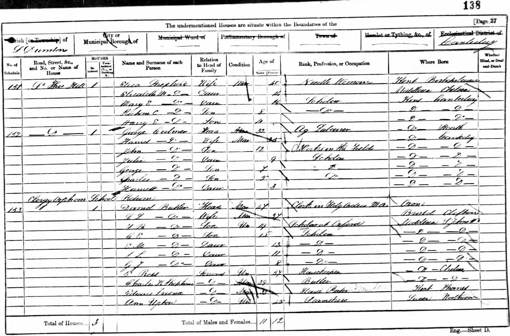
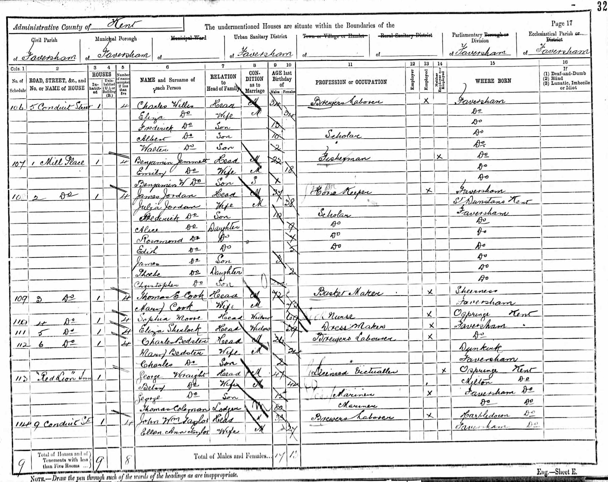
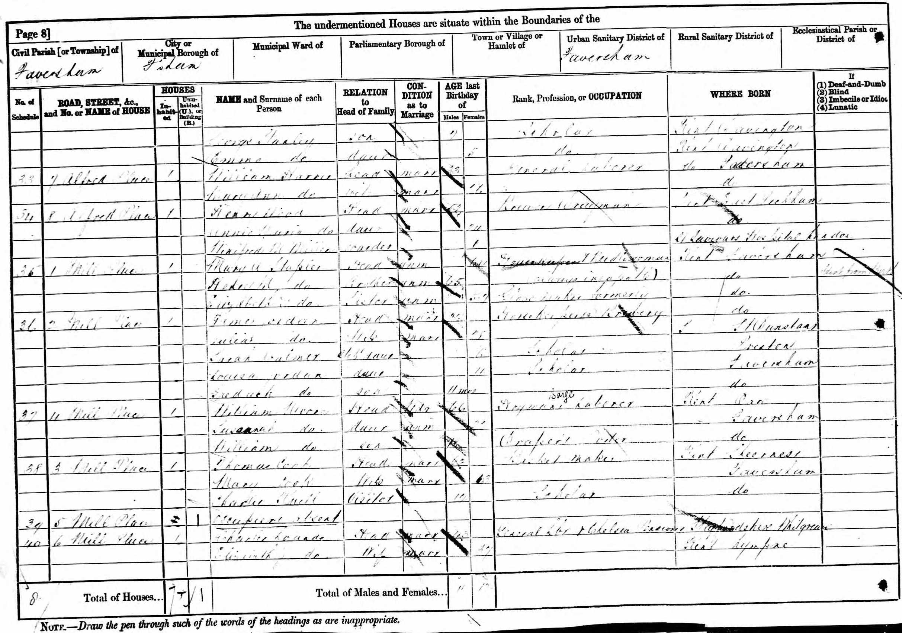
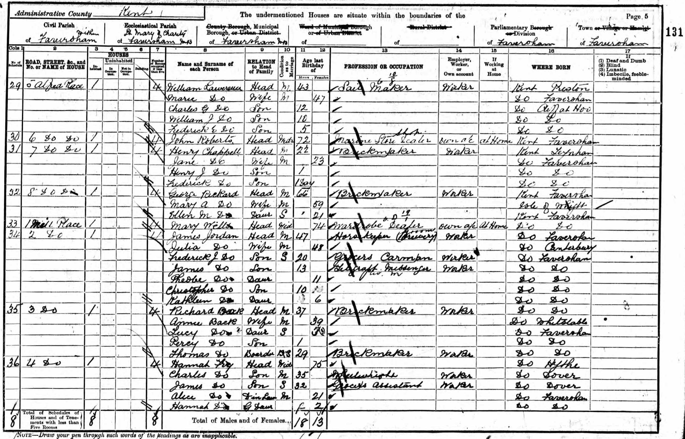
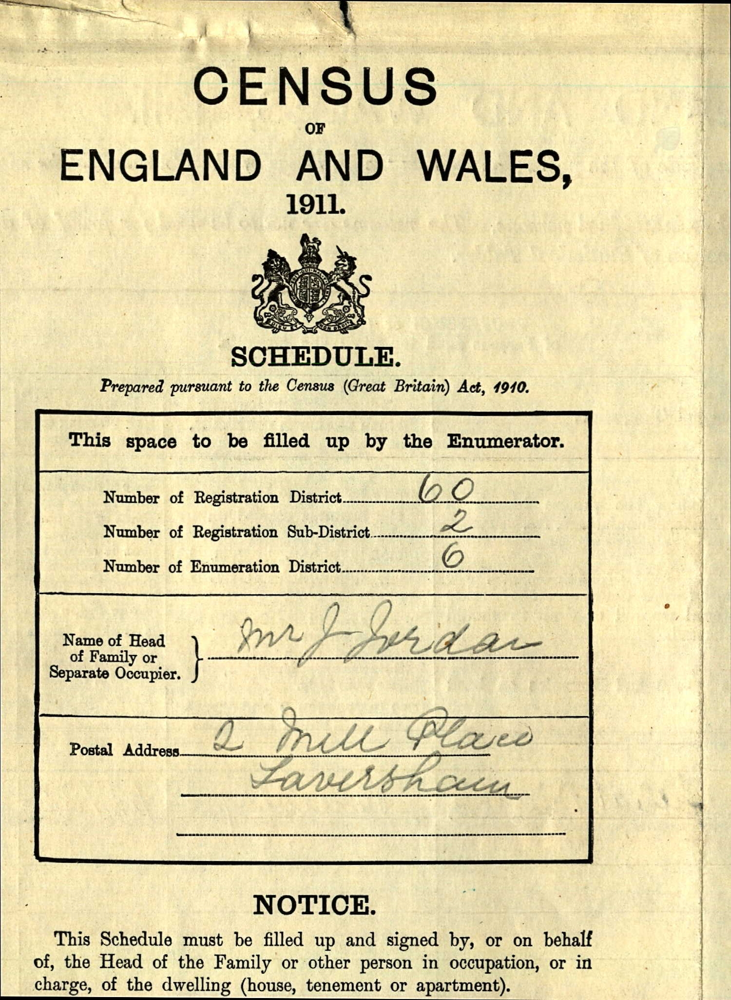
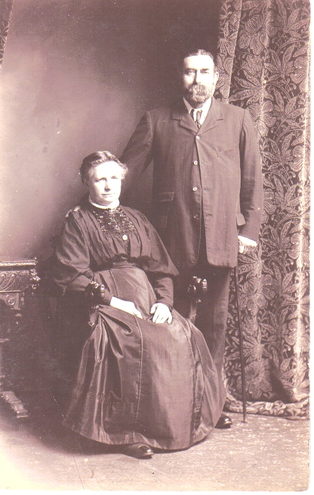
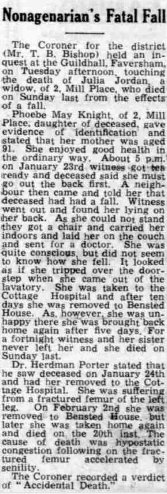
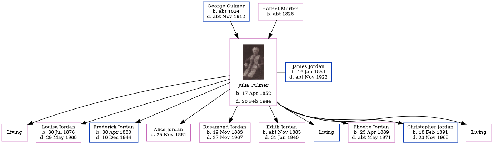

Julia Jordan (née Culmer) 1852 - 1944
[ Home ] | [ Calendar ] | [ Surnames Index ] | [ Family History ]The daughter of George Culmer (an agricultural laborer) and Harriet Marten, Julia Culmer, the first cousin three-times-removed on the mother's side of <a href="I1.html">Nigel Horne</a>, was born in Canterbury, Kent, England on Apr 17, 1852<span class="citation">1,2</span>, was baptized there at St Andrew's Church on May 23, 1852 and married James Jordan (a horse keeper with whom she had 10 children: <a href="I2097.html">Sarah Elizabeth</a>, <a href="I2098.html">Louisa</a>, <a href="I2079.html">Frederick John Thomas</a>, <a href="I2099.html">Alice Ann Harriet</a>, <a href="I2100.html">Rosamond Julia</a>, <a href="I2101.html">Edith Emma Nellie</a>, <a href="I2102.html">James George Charles</a>, <a href="I2103.html">Phoebe May</a>, <a href="I2104.html">Christopher Gerald</a> and <a href="I2105.html">Kathleen Mary</a>, along with 3 surviving children) on St Mary Of Charity Church, Church Road, Faversham, Kent, England on Apr 1, 1876<span class="citation">4</span>.</p><p>Julia spent all of her life in Kent, England. Throughout her life, she lived at St Thomas Hill in Canterbury on Apr 7, 1861<span class="citation">5</span>; and at 2 Mill Place in Faversham on Apr 3, 1881<span class="citation">6</span>, on Apr 5, 1891<span class="citation">7</span>, on Mar 31, 1901<span class="citation">8</span>, on Apr 2, 1911<span class="citation">9</span> and on Sep 29, 1939<span class="citation">1</span> which is where she died on Feb 20, 1944<span class="citation">3</span> (hypostatic congestion following a fall at home) (hypostatic congestion following a fall at home).
Parents
- George was born c. 1824
- Harriet was born c. 1826
Children
- Louisa was born on Jul 30, 1876
- Frederick John Thomas was born on Apr 30, 1880
- Alice Ann Harriet was born on Nov 25, 1881
- Rosamond Julia was born on Nov 19, 1883
- Edith Emma Nellie was born c. Nov 1885
- Phoebe May was born on Apr 23, 1889
- Christopher Gerald was born on Feb 18, 1891
Citations
- 1939 Register - Findmypast (was recorded at this address)
- England & Wales births 1837-2006 - Findmypast
- England & Wales deaths 1837-2007 - Findmypast
- Kent, Canterbury Archdeaconry Marriages - Findmypast
- 1861 England, Wales & Scotland Census - Findmypast (was age 9 and the daughter of the head of the household)
- 1881 England, Wales & Scotland Census - Findmypast (was age 28 and the wife of the head of the household)
- 1891 England, Wales & Scotland Census - Findmypast (was age 38 and the wife of the head of the household)
- 1901 England, Wales & Scotland Census - Findmypast (was age 48 and the wife of the head of the household)
- 1911 Census for England & Wales - Findmypast (was age 58 and the wife of the head of the household)
Media
Julia Culmer - 1

Julia Culmer - 2

1861 UK Census

1891 UK Census

1881 UK Census

1901 UK Census

1911 UK Census - page 1

1911 UK Census - page 2

James Jordan and Julia Culmer

Whitstable Times and Herne Bay Herald 26 Feb 1944

England & Wales births 1837-2006 - BMD/B/1852/2/AH/000875/020
1939 Register Transcription - TNA-R39-1715-1715J-013-20
England & Wales deaths 1837-2007 - BMD/D/1944/1/AZ/000603/098
1911 England, Wales & Scotland Census Transcription - GBC-1911-RG14-04395-0273-2
Kent, Canterbury Archdeaconry Marriages Transcription - GBPRS-CANT-M-97028366-2
England Marriages 1538-1973 - R_848611217/2
England Marriages 1538-1973 - R_854023152/2
1861 England, Wales & Scotland Census Transcription - GBC-1861-0003450767
1881 England, Wales & Scotland Census Transcription - GBC-1881-0004769062
1891 England, Wales & Scotland Census Transcription - GBC-1891-0005793046
England & Wales marriages 1837-2005 - BMD/M/1876/2/AZ/000066/135
Kent Baptisms - GBPRS/CANT/B/96698417
England Births & Baptisms 1538-1975 - R_884059778
England Births & Baptisms 1538-1975 - R_937841777
Family Tree
Generated by Ged2Site. Last updated on Jul 20, 2025